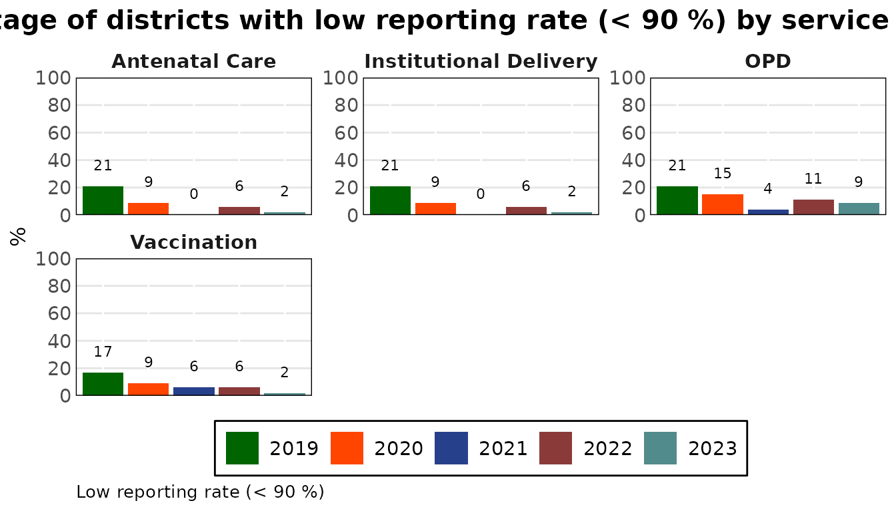

cd2030.core is the Countdown to 2030 analysis of routine health facility data. This guide loads a dataset, looks at its quality, computes coverage and saves the work, in about twenty lines of R. Each step has its own guide with the detail:
| Step | Guide |
|---|---|
| What a dataset file must contain | vignette("preparing-data") |
| Reporting rates, outliers, missing values, consistency | vignette("data-quality") |
| Adjustment, denominators, coverage, reports | vignette("coverage") |
| The Shiny apps built on this package | vignette("building-an-app") |
Install
The package is published on r-universe, not CRAN. datasuite.ui, which it needs, is in the same repository.
install.packages(
"cd2030.core",
repos = c("https://damurka.r-universe.dev", "https://alkemalab.r-universe.dev", "https://cloud.r-project.org")
)Add dependencies = TRUE for the optional features: PDF
and PowerPoint export, and the Bayesian coverage model.
Load a dataset
A dataset is the Countdown Excel workbook, a Stata .dta
master file, or an .rds saved by this package. The package
comes with an example workbook for Kenya.
library(cd2030.core)
path <- system.file("extdata", "kenya.xlsx", package = "cd2030.core")
cache <- load_cache_data(path)
#> ℹ Loading Excel "kenya.xlsx" for parts
#> ! The following columns are empty: anc_1trimester, under5_deaths, total_deaths, ipv2, measles_cases
#> ℹ Successfully loaded and cleaned data
#> ℹ Auto-detect candidates (|group|): vaccine=19, rmncah=28 -> selected rmncahLoading reads the sheets, cleans the column names, merges them into
one table with a row per district and month, and works out which
indicator group the file holds ("rmncah" or
"vaccine"). It also names the columns that are empty.
cache is a CacheConnection: the data
together with every choice made about it (years removed, adjustment
factors, denominators, surveys). The data itself is a tibble of class
cd_data.
data <- cache$countdown_data
data
#> ───────────────────────────────────── Countdown Object Summary ─────────────────────────────────────
#>
#> ── Data Summary ──
#>
#> • Number of observations: 2820
#> • Number of variables: 73
#> • Number of years: 5
#> • Number of regions: 8
#>
#> ── Years Available ──
#>
#> • 2019
#> • 2020
#> • 2021
#> • 2022
#> • 2023
#>
#> ── Regions Available ──
#>
#> • Rift Valley
#> • Western
#> • Eastern
#> • North Eastern
#> • Nyanza
#> • Central
#> • Coast
#> • Nairobi
#>
#> ── Variable Groups Available ──
#>
#> * anc: anc1, anc_1trimester, anc4, ipt2, ipt3, syphilis_test, ifa90, hiv_test
#> * idelv: sba, ideliv, instlivebirths, csection, low_bweight, pnc48h, total_stillbirth,
#> stillbirth_f, stillbirth_m, maternal_deaths, neonatal_deaths
#> * vacc: penta1, penta3, measles1, measles2, bcg
#> * opd: opd_total, opd_under5
#> * ipd: ipd_total, ipd_under5
#> ────────────────────────────────────────────────────────────────────────────────────────────────────
#> # A tibble: 2,820 × 73
#> country adminlevel_1 district year month anc1 anc_1trimester anc4 ipt2 ipt3 ifa90
#> <chr> <chr> <chr> <int> <ord> <dbl> <dbl> <dbl> <dbl> <dbl> <dbl>
#> 1 Kenya Rift Valley Baringo 2019 January 2006 NA 750 11 NA NA
#> 2 Kenya Rift Valley Baringo 2019 February 1237 NA 676 NA NA NA
#> 3 Kenya Rift Valley Baringo 2019 March 1511 NA 796 NA NA NA
#> 4 Kenya Rift Valley Baringo 2019 April 1575 NA 889 NA NA NA
#> 5 Kenya Rift Valley Baringo 2019 May 1768 NA 878 NA NA NA
#> # ℹ 2,815 more rows
#> # ℹ 62 more variables: syphilis_test <dbl>, hiv_test <dbl>, sba <dbl>, ideliv <dbl>,
#> # instlivebirths <dbl>, csection <dbl>, …For the country it found, the package fills in the reference data it holds: UN population estimates, WUENIC immunization estimates and the household surveys.
cache$country
#> [1] "Kenya"
cache$survey_years
#> [1] 2014 2022If you only want the data, load_data(path) returns the
cd_data tibble without the
CacheConnection.
Look at the quality of the data
The quality functions take the data and return a table. Most take an
administrative level: "national",
"adminlevel_1" (region) or "district".
calculate_average_reporting_rate(data)
#> # Table 1a: Annual average reporting rates for all indicators, by year
#> # A tibble: 5 × 6
#> year anc_rr idelv_rr vacc_rr opd_rr mean_rr
#> <int> <dbl> <dbl> <dbl> <dbl> <dbl>
#> 1 2019 94 94 94 95 94
#> 2 2020 96 96 95 96 96
#> 3 2021 96 96 96 96 96
#> 4 2022 97 97 97 96 97
#> 5 2023 97 97 98 97 97Most results have a plot() method.
plot(calculate_district_reporting_rate(data, threshold = 90))
calculate_overall_score() puts the checks in one table:
completeness, extreme outliers, consistency between related indicators,
and a score for each year.
calculate_overall_score(data, threshold = 90)[, c("no", "Data Quality Metrics", "2022", "2023")]
#> # A tibble: 10 × 4
#> no `Data Quality Metrics` `2022` `2023`
#> <chr> <chr> <dbl> <dbl>
#> 1 1a % of expected monthly facility reports (national) 96.4 96.9
#> 2 1b % of districts with completeness of facility reporting >= 90 93 96
#> 3 1c % of districts with no missing values for the 4 forms 84.0 84.7
#> 4 2a % of monthly values that are not extreme outliers (national) 98.8 96.1
#> 5 2b % of districts with no extreme outliers in the year 91.7 87.2
#> 6 3a Ratio anc1/penta1 1.07 1.06
#> 7 3b Ratio penta1/penta3 1.04 1.04
#> 8 3c % district with anc1/penta1 in expected ranged 87.2 85.1
#> 9 3d % district with penta1/penta3 in expected ranged 87.2 93.6
#> 10 4 Annual data quality score 91.2 91.4Adjust the data and compute coverage
Coverage is computed from adjusted data: counts scaled up for
incomplete reporting, with extreme outliers and missing values replaced.
The CacheConnection does this with the settings it holds
and keeps the result.
cache$set_k_factors(c(anc = 0.25, idelv = 0.25, vacc = 0.25, opd = 0.25, ipd = 0.25))
cache$adjust_data()Coverage also needs a few national rates. Those the country’s latest survey has are already filled in; this survey has no stillbirth rate, so it is given here.
cache$set_national_estimates(list(sbr = 0.02))
coverage <- cache$get_filtered_coverage("penta3", "national")
coverage
#> # A tibble: 5 × 7
#> estimates `2014` `2019` `2020` `2021` `2022` `2023`
#> <chr> <dbl> <dbl> <dbl> <dbl> <dbl> <dbl>
#> 1 DHIS2 estimate NA 92.2 93.2 92.1 93.8 93.7
#> 2 Survey estimates 89.9 NA NA NA 89.2 NA
#> 3 95% CI LL 88.5 NA NA NA 87.8 NA
#> 4 95% CI UL 91.1 NA NA NA 90.4 NA
#> 5 WUENIC estimates NA 91 89 91 90 93The table sets the facility-data estimate beside the survey and WUENIC estimates, and so does its chart.
plot(coverage)
Save the work
Give the dataset a path and it saves itself there, now and after each
later change. load_cache_data() opens the file again with
every choice as it was.
saved <- file.path(tempdir(), "kenya.rds")
cache$set_cache_path(saved)
#> ℹ Successfully saved to "/tmp/RtmpXh91H8/kenya.rds".
reopened <- load_cache_data(saved)
reopened$k_factors
#> anc idelv vacc opd ipd
#> 0.25 0.25 0.25 0.25 0.25Where to go next
-
vignette("preparing-data")describes the workbook and how to check your own file. -
vignette("data-quality")andvignette("coverage")follow the analysis step by step. - The reference lists every function by analysis step.
?CacheConnectionlists everything the dataset object holds and computes. - The same analysis is available without writing R in the Countdown
apps (cd2030.rmncah, cd2030.vaxx), which run inside DataSuite.
vignette("building-an-app")describes how they are built.